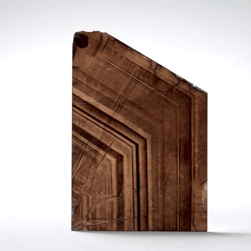

Phlogopite - KMg3(Si3Al)O10(OH)2
Phyllosilicates


Habit: Brownish red, dark brown, yellowish brown, green or white. Crystals six-sided, thick tabular to prismatic, commonly tapered; also coarse-grained or platy. Pearly to submetallic luster; transparent to translucent. White streak.
Environment: Found in contact and regional metamorphic limestones and dolomites and ultramafic rocks.
Etymology: From the Greek phlogopos, meaning "resembling fire," in allusion to its red tint.